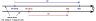
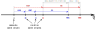
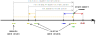

The Affine Space¶
The affine space has two types of entities:
- Point - a position specified with coordinate values (e.g., location, address, etc.)
- Displacement vector - the difference between two points (e.g., shift, offset, displacement, duration, etc.)
In the following subchapters, we will often refer to displacement vectors simply as vectors for brevity.
Note
The displacement vector described here is specific to the affine space theory and is not the same thing as the quantity of a vector character that we discussed in the "Scalars, vectors, and tensors" chapter (although, in some cases, those terms may overlap).
Operations in the affine space¶
Here are the primary operations one can do in the affine space:
- vector + vector -> vector
- vector - vector -> vector
- -vector -> vector
- vector * scalar -> vector
- scalar * vector -> vector
- vector / scalar -> vector
- point - point -> vector
- point + vector -> point
- vector + point -> point
- point - vector -> point
Important
It is not possible to:
- add two points,
- subtract a point from a vector,
- multiply nor divide points with anything else.
Points are more common than most of us imagine¶
Point abstractions should be used more often in the C++ software. They are not only about temperature or time. Points are everywhere around us and should become more popular in the products we implement. They can be used to implement:
- temperature points,
- timestamps,
- daily mass readouts from the scale,
- altitudes of mountain peaks on a map,
- current path length measured by the car's odometer,
- today's price of instruments on the market,
- and many more.
Improving the affine space's Points intuition will allow us to write better and safer software.
Displacement vector is modeled by quantity¶
Up until now, each time we used a quantity in our code, we were modeling some kind of a
difference between two things:
- the distance between two points,
- duration between two time points,
- the difference in speed (even if relative to zero).
As we already know, a quantity type provides all operations required for a displacement vector
abstraction in the affine space. It can be constructed with:
- the multiply syntax (works for most of the units),
delta<Reference>construction helper (e.g.,delta<isq::height[m]>(42),delta<deg_C>(3)),- two-parameter constructor taking a number and a quantity reference/unit.
Note
The multiply syntax support is disabled for units that provide a point origin in their
definition (i.e., units of temperature like K, deg_C, and deg_F).
Point is modeled by quantity_point and PointOrigin¶
In the mp-units library, the Point abstraction is modelled by:
PointOriginconcept that specifies measurement origin, andquantity_pointclass template that specifies a Point relative to a specific predefined origin.
quantity_point¶
The quantity_point class template specifies an absolute quantity measured from a predefined
origin:
template<Reference auto R,
PointOriginFor<get_quantity_spec(R)> auto PO = default_point_origin(R),
RepresentationOf<get_quantity_spec(R)> Rep = double>
class quantity_point;
As we can see above, the quantity_point class template exposes one additional parameter compared
to quantity. The PO parameter satisfies a PointOriginFor concept
and specifies the origin of our measurement scale.
Each quantity_point internally stores a quantity object, which represents a displacement vector
from the predefined origin. Thanks to this, an instantiation of a quantity_point can be considered
as a model of a vector space from such an origin.
Forcing the user to manually predefine an origin for every domain may be cumbersome and discourage
users from using such abstractions at all. This is why, by default, the PO template
parameter is initialized with the default_point_origin(R) that provides the quantity points'
scale zeroth point using the following rules:
- if the measurement unit of a quantity specifies its point origin in its definition (e.g., degree Celsius), then this origin is being used,
- otherwise, an instantiation of
zeroth_point_origin<QuantitySpec>is being used which provides a well-established zeroth point for a specific quantity type.
Quantity points with default point origins may be constructed with the point construction
helper or forcing an explicit conversion from the quantity:
// quantity_point qp1 = 42 * m; // Compile-time error
// quantity_point qp2 = 42 * K; // Compile-time error
// quantity_point qp3 = delta<deg_C>(42); // Compile-time error
quantity_point qp4(42 * m);
quantity_point qp5(42 * K);
quantity_point qp6(delta<deg_C>(42));
quantity_point qp7 = point<m>(42);
quantity_point qp8 = point<K>(42);
quantity_point qp9 = point<deg_C>(42);
Tip
The quantity_point definition can be found in the mp-units/quantity_point.h header file.
zeroth_point_origin<QuantitySpec>¶
zeroth_point_origin<QuantitySpec> is meant to be used in cases where the specific domain has
a well-established, non-controversial, and unique zeroth point on the measurement scale.
This saves the user from the need to write a boilerplate code that would predefine such a type
for this domain.
quantity_point<isq::distance[si::metre]> qp1(100 * m);
quantity_point<isq::distance[si::metre]> qp2 = point<m>(120);
assert(qp1.quantity_from_zero() == 100 * m);
assert(qp2.quantity_from_zero() == 120 * m);
assert(qp2.quantity_from(qp1) == 20 * m);
assert(qp1.quantity_from(qp2) == -20 * m);
assert(qp2 - qp1 == 20 * m);
assert(qp1 - qp2 == -20 * m);
// auto res = qp1 + qp2; // Compile-time error
In the above code 100 * m and 120 * m still create two quantities that serve as displacement
vectors here. Quantity point objects can be explicitly constructed from such quantities only when
their origin is an instantiation of the zeroth_point_origin<QuantitySpec>.
It is really important to understand that even though we can use .quantity_from_zero() to obtain
the displacement vector of a point from the origin, the point by itself does not represent or have
any associated physical value. It is just a point in some space. The same point can be expressed
with different displacement vectors from different origins.
It is also worth mentioning that simplicity comes with a safety cost here. For some users, it
might be surprising that the usage of zeroth_point_origin<QuantitySpec> makes various quantity
point objects compatible as long as quantity types used in the origin and reference are
compatible:
quantity_point<si::metre> qp1{isq::distance(100 * m)};
quantity_point<si::metre> qp2 = point<isq::height[m]>(120);
assert(qp2.quantity_from(qp1) == 20 * m);
assert(qp1.quantity_from(qp2) == -20 * m);
assert(qp2 - qp1 == 20 * m);
assert(qp1 - qp2 == -20 * m);
Absolute point origin¶
In cases where we want to implement an isolated independent space in which points are not compatible with other spaces, even of the same quantity type, we should manually predefine an absolute point origin.
inline constexpr struct origin final : absolute_point_origin<isq::distance> {} origin;
// quantity_point<si::metre, origin> qp1{100 * m}; // Compile-time error
// quantity_point<si::metre, origin> qp2{delta<m>(120)}; // Compile-time error
quantity_point<si::metre, origin> qp1 = origin + 100 * m;
quantity_point<si::metre, origin> qp2 = 120 * m + origin;
// assert(qp1.quantity_from_zero() == 100 * m); // Compile-time error
// assert(qp2.quantity_from_zero() == 120 * m); // Compile-time error
assert(qp1.quantity_from(origin) == 100 * m);
assert(qp2.quantity_from(origin) == 120 * m);
assert(qp2.quantity_from(qp1) == 20 * m);
assert(qp1.quantity_from(qp2) == -20 * m);
assert(qp1 - origin == 100 * m);
assert(qp2 - origin == 120 * m);
assert(qp2 - qp1 == 20 * m);
assert(qp1 - qp2 == -20 * m);
assert(origin - qp1 == -100 * m);
assert(origin - qp2 == -120 * m);
// assert(origin - origin == 0 * m); // Compile-time error
We can't construct a quantity point directly from the quantity anymore when a custom, named origin is used. To prevent potential safety and maintenance issues, we always need to explicitly provide both a compatible origin and a quantity measured from it to construct a quantity point.
Said otherwise, a quantity point defined in terms of a specific origin is the result of adding the origin and the displacement vector measured from it to the point we create.
Info
A rationale for this longer construction syntax can be found in the Why can't I create a quantity by passing a number to a constructor? chapter.
Similarly to creation of a quantity,
if someone does not like the operator-based syntax to create a quantity_point, the same results
can be achieved with a two-parameter constructor:
Again, CTAD always helps to use precisely the type we need in a current case.
Additionally, if a quantity point is defined in terms of a custom, named origin, then we can't use
a quantity_from_zero() member function anymore. This is to prevent surprises, as our origin may
not necessarily be perceived as an absolute zero in the domain we model. Also, as we will learn soon,
we can define several related origins in one space, and then it gets harder to understand which
one is the "zero" one. This is why, to be specific and always correct about the points we use,
a quantity_from(QP) member function can be used (where QP can either be an origin or another
quantity point).
Finally, please note that it is not allowed to subtract two point origins defined in terms of
absolute_point_origin (e.g., origin - origin) as those do not contain information about the
unit, so we cannot determine a resulting quantity type.
Modeling independent spaces in one domain¶
Absolute point origins are also perfect for establishing independent spaces even if the same quantity type and unit is being used:

inline constexpr struct origin1 final : absolute_point_origin<isq::distance> {} origin1;
inline constexpr struct origin2 final : absolute_point_origin<isq::distance> {} origin2;
quantity_point qp1 = origin1 + 100 * m;
quantity_point qp2 = origin2 + 120 * m;
assert(qp1.quantity_from(origin1) == 100 * m);
assert(qp2.quantity_from(origin2) == 120 * m);
assert(qp1 - origin1 == 100 * m);
assert(qp2 - origin2 == 120 * m);
assert(origin1 - qp1 == -100 * m);
assert(origin2 - qp2 == -120 * m);
// assert(qp2 - qp1 == 20 * m); // Compile-time error
// assert(qp1 - origin2 == 100 * m); // Compile-time error
// assert(qp2 - origin1 == 120 * m); // Compile-time error
// assert(qp2.quantity_from(qp1) == 20 * m); // Compile-time error
// assert(qp1.quantity_from(origin2) == 100 * m); // Compile-time error
// assert(qp2.quantity_from(origin1) == 120 * m); // Compile-time error
Relative Point origin¶
We often do not have only one ultimate "zero" point when we measure things. Often, we have one common scale, but we measure various quantities relative to different points and expect those points to be compatible. There are many examples here, but probably the most common are temperatures, timestamps, and altitudes.
For such cases, relative point origins should be used:

inline constexpr struct A final : absolute_point_origin<isq::distance> {} A;
inline constexpr struct B final : relative_point_origin<A + 10 * m> {} B;
inline constexpr struct C final : relative_point_origin<B + 10 * m> {} C;
inline constexpr struct D final : relative_point_origin<A + 30 * m> {} D;
quantity_point qp1 = C + 100 * m;
quantity_point qp2 = D + 120 * m;
assert(qp1.quantity_ref_from(qp1.point_origin) == 100 * m);
assert(qp2.quantity_ref_from(qp2.point_origin) == 120 * m);
assert(qp2.quantity_from(qp1) == 30 * m);
assert(qp1.quantity_from(qp2) == -30 * m);
assert(qp2 - qp1 == 30 * m);
assert(qp1 - qp2 == -30 * m);
assert(qp1.quantity_from(A) == 120 * m);
assert(qp1.quantity_from(B) == 110 * m);
assert(qp1.quantity_from(C) == 100 * m);
assert(qp1.quantity_from(D) == 90 * m);
assert(qp1 - A == 120 * m);
assert(qp1 - B == 110 * m);
assert(qp1 - C == 100 * m);
assert(qp1 - D == 90 * m);
assert(qp2.quantity_from(A) == 150 * m);
assert(qp2.quantity_from(B) == 140 * m);
assert(qp2.quantity_from(C) == 130 * m);
assert(qp2.quantity_from(D) == 120 * m);
assert(qp2 - A == 150 * m);
assert(qp2 - B == 140 * m);
assert(qp2 - C == 130 * m);
assert(qp2 - D == 120 * m);
assert(B - A == 10 * m);
assert(C - A == 20 * m);
assert(D - A == 30 * m);
assert(D - C == 10 * m);
assert(B - B == 0 * m);
// assert(A - A == 0 * m); // Compile-time error
Note
Even though we can't subtract two absolute point origins from each other, it is possible to subtract relative ones or relative and absolute ones.
Converting between different representations of the same point¶
As we might represent the same point with displacement vectors from various origins, the
library provides facilities to convert the same point to the quantity_point class templates
expressed in terms of different origins.
For this purpose, we can use either:
-
A converting constructor:
-
A dedicated conversion interface:
It is important to understand that all such translations still describe exactly the same point (e.g., all of them compare equal):
Important
It is only allowed to convert between various origins defined in terms of the same
absolute_point_origin. Even if it is possible to express the same point as a
displacement vector from another absolute_point_origin, the library will not provide such
a conversion. A custom user-defined conversion function will be needed to add such a
functionality.
Said another way, in the library, there is no way to spell how two distinct absolute_point_origin
types relate to each other.
Temperature support¶
Support for temperature quantity points is probably one of the most common examples of relative point origins in action that we use in daily life.
The SI definition in the library provides a few predefined point origins for this purpose:
namespace si {
inline constexpr struct absolute_zero final : absolute_point_origin<isq::thermodynamic_temperature> {} absolute_zero;
inline constexpr auto zeroth_kelvin = absolute_zero;
inline constexpr struct ice_point final : relative_point_origin<point<milli<kelvin>>(273'150)}> {} ice_point;
inline constexpr auto zeroth_degree_Celsius = ice_point;
}
namespace usc {
inline constexpr struct zeroth_degree_Fahrenheit final :
relative_point_origin<point<mag_ratio<5, 9> * si::degree_Celsius>(-32)> {} zeroth_degree_Fahrenheit;
}
The above is a great example of how point origins can be stacked on top of each other:
usc::zeroth_degree_Fahrenheitis defined relative tosi::zeroth_degree_Celsiussi::zeroth_degree_Celsiusis defined relative tosi::zeroth_kelvin.
Note
Notice that while stacking point origins, we can use different representation types and units
for origins and a point. In the above example, the relative point origin for degree Celsius
is defined in terms of si::kelvin, while the quantity point for it will use
si::degree_Celsius as a unit.
The temperature point origins defined above are provided explicitly in the respective units' definitions:
namespace si {
inline constexpr struct kelvin final :
named_unit<"K", kind_of<isq::thermodynamic_temperature>, zeroth_kelvin> {} kelvin;
inline constexpr struct degree_Celsius final :
named_unit<{u8"℃", "`C"}, kelvin, zeroth_degree_Celsius> {} degree_Celsius;
}
namespace usc {
inline constexpr struct degree_Fahrenheit final :
named_unit<{u8"℉", "`F"}, mag_ratio<5, 9> * si::degree_Celsius,
zeroth_degree_Fahrenheit> {} degree_Fahrenheit;
}
As it was described above, default_point_origin(R) returns a zeroth_point_origin<QuantitySpec>
when a unit does not provide any origin in its definition. As of today, the units of temperature
are the only ones in the entire mp-units library that provide such origins.
Now, let's see how we can benefit from the above definitions. We have quite a few alternatives to choose from here. Depending on our needs or tastes, we can:
-
be explicit about the unit and origin:
quantity_point<si::degree_Celsius, si::zeroth_degree_Celsius> q1 = si::zeroth_degree_Celsius + delta<deg_C>(20.5); quantity_point<si::degree_Celsius, si::zeroth_degree_Celsius> q2{delta<deg_C>(20.5), si::zeroth_degree_Celsius}; quantity_point<si::degree_Celsius, si::zeroth_degree_Celsius> q3{delta<deg_C>(20.5)}; quantity_point<si::degree_Celsius, si::zeroth_degree_Celsius> q4 = point<deg_C>(20.5); -
specify a unit and use its zeroth point origin implicitly:
-
benefit from CTAD:
In all of the above cases, we end up with the quantity_point of the same type and value.
To play a bit more with temperatures, we can implement a simple room AC temperature controller in the following way:

constexpr struct room_reference_temp final : relative_point_origin<point<deg_C>(21)> {} room_reference_temp;
using room_temp = quantity_point<isq::Celsius_temperature[deg_C], room_reference_temp>;
constexpr auto step_delta = delta<isq::Celsius_temperature<deg_C>>(0.5);
constexpr int number_of_steps = 6;
room_temp room_ref{};
room_temp room_low = room_ref - number_of_steps * step_delta;
room_temp room_high = room_ref + number_of_steps * step_delta;
std::println("Room reference temperature: {} ({}, {::N[.2f]})\n",
room_ref.quantity_from_zero(),
room_ref.in(usc::degree_Fahrenheit).quantity_from_zero(),
room_ref.in(si::kelvin).quantity_from_zero());
std::println("| {:<18} | {:^18} | {:^18} | {:^18} |",
"Temperature delta", "Room reference", "Ice point", "Absolute zero");
std::println("|{0:=^20}|{0:=^20}|{0:=^20}|{0:=^20}|", "");
auto print_temp = [&](std::string_view label, auto v) {
std::println("| {:<14} | {:^18} | {:^18} | {:^18:N[.2f]} |", label,
v - room_reference_temp, (v - si::ice_point).in(deg_C), (v - si::absolute_zero).in(deg_C));
};
print_temp("Lowest", room_low);
print_temp("Default", room_ref);
print_temp("Highest", room_high);
The above prints:
Room reference temperature: 21 ℃ (69.8 ℉, 294.15 K)
| Temperature delta | Room reference | Ice point | Absolute zero |
|====================|====================|====================|====================|
| Lowest | -3 ℃ | 18 ℃ | 291.15 ℃ |
| Default | 0 ℃ | 21 ℃ | 294.15 ℃ |
| Highest | 3 ℃ | 24 ℃ | 297.15 ℃ |
No text output for Points¶
The library does not provide a text output for quantity points. The quantity stored inside is just an implementation detail of this type. It is a vector from a specific origin. Without the knowledge of the origin, the vector by itself is useless as we can't determine which point it describes.
In the current library design, point origin does not provide any text in its definition. Even if we could add such information to the point's definition, we would not know how to output it in the text. There may be many ways to do it. For example, should we prepend or append the origin part to the quantity text?
For example, the text output of 42 m for a quantity point may mean many things. It may be
an offset from the mountain top, sea level, or maybe the center of Mars.
Printing 42 m AMSL for altitudes above mean sea level is a much better solution, but the
library does not have enough information to print it that way by itself.
The affine space is about type-safety¶
The following operations are not allowed in the affine space:
- adding two
quantity_pointobjects- It is physically impossible to add positions of home and Denver airports.
- subtracting a
quantity_pointfrom aquantity- What would it mean to subtract the DEN airport location from the distance to it?
- multiplying/dividing a
quantity_pointwith a scalar- What is the position of
2 *DEN airport location?
- What is the position of
- multiplying/dividing a
quantity_pointwith a quantity- What would multiplying the distance with the DEN airport location mean?
- multiplying/dividing two
quantity_pointobjects- What would multiplying home and DEN airport location mean?
- mixing
quantity_pointsof different quantity kinds- It is physically impossible to subtract time from length.
- mixing
quantity_pointsof inconvertible quantities- What does subtracting a distance point to DEN airport from the Mount Everest base camp altitude mean?
- mixing
quantity_pointsof convertible quantities but with unrelated origins- How do we subtract a point on our trip to CppCon measured relatively to our home location from a point measured relative to the center of the Solar System?
Important: The affine space improves safety
The usage of quantity_point and affine space types, in general, improves expressiveness and
type-safety of the code we write.